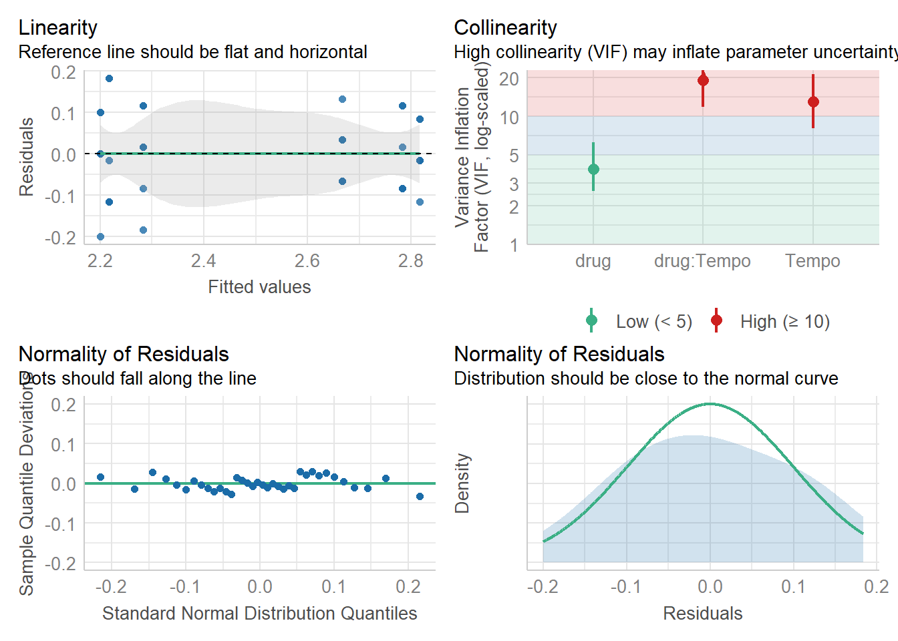

# Carregar o banco de dados e armazena na variável original_wide
original_wide = read.spss("bd_New drug_respiratory&pulse.sav", to.data.frame=TRUE) 2 Lista 2 - GEE
2.1 Introdução
Na lista 2 vamos utilizar mais uma vez o banco de dados New Drug com medidas de resp e pulse. Não se esqueça de transformá-lo para o formato long como no exercício anterior.
# Renomear as colunas do banco de dados para facilitar a conversão para o formato longo.
bd <- original_wide %>% rename_with(~gsub("(resp|pulse)(\\d+)", "\\1_\\2", .), -drug) %>% mutate(ID = row_number()) %>% dplyr::select(ID, everything()) # Organizar os dados para o formato longo
bd_long = pivot_longer(bd, cols=resp_1:pulse_3, names_to = c(".value", "Tempo"), names_pattern = "(.+)_(.+)") Primeiras linhas do banco de dados depois de transformado.
head(bd_long)# A tibble: 6 × 5
ID drug Tempo resp pulse
<int> <fct> <chr> <dbl> <dbl>
1 1 New Drug 1 3.4 2.2
2 1 New Drug 2 3.3 2.1
3 1 New Drug 3 3.3 2.1
4 2 New Drug 1 3.4 2.2
5 2 New Drug 2 3.4 2.1
6 2 New Drug 3 3.3 2.22.2 Exercícios
a) GEE com a VD “Pulse”
Utilize um GEE para verificar o efeito de tempo e grupo sobre os resultados de resp e pulse. Faça 3 modelos para cada variável dependente (com as distribuições Normal, Gamma e Tweedie) e cole aqui apenas as tabelas relevantes para a análise.
Distribuição normal
Criando o modelo
model_gee_tweedie <- glmmTMB::glmmTMB(formula = resp ~ Tempo*drug + us(1 + Tempo | ID),
family = gaussian(),# tweedie(var.power = 1.5, link.power = 0), # Definindo a família Tweedie
data = bd_long # Seu conjunto de dados
#corstr = "exchangeable" # Estrutura de correlação (pode ser "independence", "exchangeable", etc.)
)Warning in finalizeTMB(TMBStruc, obj, fit, h, data.tmb.old): Model convergence
problem; non-positive-definite Hessian matrix. See vignette('troubleshooting')AIC(model_gee_tweedie)[1] NArm(model_gee_tweedie)modelo_gee_pulse_normal <- geeglm(pulse ~ drug + Tempo + drug*Tempo,
data = bd_long,
id = ID,
family = gaussian, #Distribuição normal
corstr = "unstructured")Resumo do modelo e contrastes
summary(modelo_gee_pulse_normal)
Call:
geeglm(formula = pulse ~ drug + Tempo + drug * Tempo, family = gaussian,
data = bd_long, id = ID, corstr = "unstructured")
Coefficients:
Estimate Std.err Wald Pr(>|W|)
(Intercept) 2.20000 0.04082 2904.000 < 2e-16 ***
drugPlacebo 0.46667 0.05092 84.000 < 2e-16 ***
Tempo2 0.01667 0.03664 0.207 0.64921
Tempo3 0.08333 0.06838 1.485 0.22297
drugPlacebo:Tempo2 0.13333 0.04194 10.105 0.00148 **
drugPlacebo:Tempo3 0.03333 0.08767 0.145 0.70377
---
Signif. codes: 0 '***' 0.001 '**' 0.01 '*' 0.05 '.' 0.1 ' ' 1
Correlation structure = unstructured
Estimated Scale Parameters:
Estimate Std.err
(Intercept) 0.00963 0.001676
Link = identity
Estimated Correlation Parameters:
Estimate Std.err
alpha.1:2 0.7212 0.1690
alpha.1:3 -0.2885 0.2076
alpha.2:3 0.1154 0.2665
Number of clusters: 12 Maximum cluster size: 3 emmeans(modelo_gee_pulse_normal, pairwise ~ drug*Tempo)$emmeans
drug Tempo emmean SE df lower.CL upper.CL
New Drug 1 2.20 0.0408 30 2.12 2.28
Placebo 1 2.67 0.0304 30 2.60 2.73
New Drug 2 2.22 0.0549 30 2.10 2.33
Placebo 2 2.82 0.0280 30 2.76 2.87
New Drug 3 2.28 0.0436 30 2.19 2.37
Placebo 3 2.78 0.0366 30 2.71 2.86
Covariance estimate used: vbeta
Confidence level used: 0.95
$contrasts
contrast estimate SE df t.ratio p.value
New Drug Tempo1 - Placebo Tempo1 -0.4667 0.0509 30 -9.165 <.0001
New Drug Tempo1 - New Drug Tempo2 -0.0167 0.0366 30 -0.455 0.9973
New Drug Tempo1 - Placebo Tempo2 -0.6167 0.0495 30 -12.449 <.0001
New Drug Tempo1 - New Drug Tempo3 -0.0833 0.0684 30 -1.219 0.8244
New Drug Tempo1 - Placebo Tempo3 -0.5833 0.0549 30 -10.634 <.0001
Placebo Tempo1 - New Drug Tempo2 0.4500 0.0627 30 7.173 <.0001
Placebo Tempo1 - Placebo Tempo2 -0.1500 0.0204 30 -7.348 <.0001
Placebo Tempo1 - New Drug Tempo3 0.3833 0.0531 30 7.213 <.0001
Placebo Tempo1 - Placebo Tempo3 -0.1167 0.0549 30 -2.127 0.3013
New Drug Tempo2 - Placebo Tempo2 -0.6000 0.0616 30 -9.738 <.0001
New Drug Tempo2 - New Drug Tempo3 -0.0667 0.0609 30 -1.095 0.8793
New Drug Tempo2 - Placebo Tempo3 -0.5667 0.0660 30 -8.590 <.0001
Placebo Tempo2 - New Drug Tempo3 0.5333 0.0518 30 10.292 <.0001
Placebo Tempo2 - Placebo Tempo3 0.0333 0.0509 30 0.655 0.9855
New Drug Tempo3 - Placebo Tempo3 -0.5000 0.0569 30 -8.783 <.0001
P value adjustment: tukey method for comparing a family of 6 estimates Verificando os pressupostos
# Plotar o diagnóstico do modelo GEE para a variável 'pulse'
check_model(modelo_gee_pulse_normal)Converting missing values (`NA`) into regular values currently not
possible for variables of class `NULL`.Failed to compute posterior predictive checks with `re_formula=NULL`.
Trying again with `re_formula=NA` now.
Plot dos resultados
# Salvando os resultados do modelo em uma variável
means_ci_normal = emmeans(modelo_gee_pulse_normal, specs = ~drug:Tempo)# Plotar as médias e intervalos de confiança
ggplot(as.data.frame(means_ci_normal), aes(x = Tempo, y = emmean, color = drug)) +
geom_errorbar(aes(ymin = lower.CL, ymax = upper.CL), width = 0.2, position = position_dodge(0.8)) +
geom_point(position = position_dodge(0.8), size = 3) +
labs(title = "Distribuição Normal",
x = "Tempo",
y = "Pulse") +
theme_minimal()Distribuição gamma
Criando o modelo
modelo_gee_pulse_gamma <- geeglm(pulse ~ drug + Tempo + drug*Tempo,
data = bd_long,
id = ID,
family = Gamma(link = "identity"), #Distribuição Gamma
corstr = "unstructured")Resumo do modelo e contrastes
summary(modelo_gee_pulse_gamma)
Call:
geeglm(formula = pulse ~ drug + Tempo + drug * Tempo, family = Gamma(link = "identity"),
data = bd_long, id = ID, corstr = "unstructured")
Coefficients:
Estimate Std.err Wald Pr(>|W|)
(Intercept) 2.2000 0.0408 2904.00 <2e-16 ***
drugPlacebo 0.4667 0.0509 84.00 <2e-16 ***
Tempo2 0.0167 0.0366 0.21 0.6492
Tempo3 0.0833 0.0684 1.49 0.2230
drugPlacebo:Tempo2 0.1333 0.0419 10.11 0.0015 **
drugPlacebo:Tempo3 0.0333 0.0877 0.14 0.7038
---
Signif. codes: 0 '***' 0.001 '**' 0.01 '*' 0.05 '.' 0.1 ' ' 1
Correlation structure = unstructured
Estimated Scale Parameters:
Estimate Std.err
(Intercept) 0.00172 0.000372
Link = identity
Estimated Correlation Parameters:
Estimate Std.err
alpha.1:2 0.745 0.178
alpha.1:3 -0.279 0.208
alpha.2:3 0.156 0.279
Number of clusters: 12 Maximum cluster size: 3 emmeans(modelo_gee_pulse_gamma, pairwise ~ drug*Tempo)$emmeans
drug Tempo emmean SE df lower.CL upper.CL
New Drug 1 2.20 0.0408 30 2.12 2.28
Placebo 1 2.67 0.0304 30 2.60 2.73
New Drug 2 2.22 0.0549 30 2.10 2.33
Placebo 2 2.82 0.0281 30 2.76 2.87
New Drug 3 2.28 0.0436 30 2.19 2.37
Placebo 3 2.78 0.0366 30 2.71 2.86
Covariance estimate used: vbeta
Confidence level used: 0.95
$contrasts
contrast estimate SE df t.ratio p.value
New Drug Tempo1 - Placebo Tempo1 -0.467 0.0509 30 -9.170 <.0001
New Drug Tempo1 - New Drug Tempo2 -0.017 0.0366 30 -0.450 0.9970
New Drug Tempo1 - Placebo Tempo2 -0.617 0.0495 30 -12.450 <.0001
New Drug Tempo1 - New Drug Tempo3 -0.083 0.0684 30 -1.220 0.8240
New Drug Tempo1 - Placebo Tempo3 -0.583 0.0549 30 -10.630 <.0001
Placebo Tempo1 - New Drug Tempo2 0.450 0.0627 30 7.170 <.0001
Placebo Tempo1 - Placebo Tempo2 -0.150 0.0204 30 -7.350 <.0001
Placebo Tempo1 - New Drug Tempo3 0.383 0.0531 30 7.210 <.0001
Placebo Tempo1 - Placebo Tempo3 -0.117 0.0549 30 -2.130 0.3010
New Drug Tempo2 - Placebo Tempo2 -0.600 0.0616 30 -9.740 <.0001
New Drug Tempo2 - New Drug Tempo3 -0.067 0.0609 30 -1.100 0.8790
New Drug Tempo2 - Placebo Tempo3 -0.567 0.0660 30 -8.590 <.0001
Placebo Tempo2 - New Drug Tempo3 0.533 0.0518 30 10.290 <.0001
Placebo Tempo2 - Placebo Tempo3 0.033 0.0509 30 0.650 0.9860
New Drug Tempo3 - Placebo Tempo3 -0.500 0.0569 30 -8.780 <.0001
P value adjustment: tukey method for comparing a family of 6 estimates Verificando os pressupostos
# Plotar o diagnóstico do modelo GEE para a variável 'pulse'
check_model(modelo_gee_pulse_gamma)Converting missing values (`NA`) into regular values currently not
possible for variables of class `NULL`.Failed to compute posterior predictive checks with `re_formula=NULL`.
Trying again with `re_formula=NA` now.Cannot simulate residuals for models of class `geeglm`. Please try
`check_model(..., residual_type = "normal")` instead.Plot dos resultados
# Salvando os resultados do modelo em uma variável
means_ci_gamma = emmeans(modelo_gee_pulse_gamma, specs = ~drug:Tempo)# Plotar as médias e intervalos de confiança
ggplot(as.data.frame(means_ci_gamma), aes(x = Tempo, y = emmean, color = drug)) +
geom_errorbar(aes(ymin = lower.CL, ymax = upper.CL), width = 0.2, position = position_dodge(0.8)) +
geom_point(position = position_dodge(0.8), size = 3) +
labs(title = "Distribuição Gamma",
x = "Tempo",
y = "Pulse") +
theme_minimal()
Distribuição tweedie
Criando o modelo
modelo_gee_pulse_tweedie <- glm(pulse ~ drug + Tempo + drug*Tempo,
data = bd_long,
# id = ID,
family = tweedie(var.power=2, link.power = 0),
contrasts = )
Aviso!
Utilizamos a fun√ß√£o glm para criar o modelo Tweedie. Estamos trabalhando para criar o modelo com a fun√ß√£o GEE. Por hora utilize o SPSSü§Æ.
Resumo do modelo e contrastes
summary(modelo_gee_pulse_tweedie)
Call:
glm(formula = pulse ~ drug + Tempo + drug * Tempo, family = tweedie(var.power = 2,
link.power = 0), data = bd_long)
Coefficients:
Estimate Std. Error t value Pr(>|t|)
(Intercept) 0.78846 0.01857 42.47 < 2e-16 ***
drugPlacebo 0.19237 0.02626 7.33 3.7e-08 ***
Tempo2 0.00755 0.02626 0.29 0.78
Tempo3 0.03718 0.02626 1.42 0.17
drugPlacebo:Tempo2 0.04718 0.03713 1.27 0.21
drugPlacebo:Tempo3 0.00564 0.03713 0.15 0.88
---
Signif. codes: 0 '***' 0.001 '**' 0.01 '*' 0.05 '.' 0.1 ' ' 1
(Dispersion parameter for Tweedie family taken to be 0.00207)
Null deviance: 0.473395 on 35 degrees of freedom
Residual deviance: 0.062212 on 30 degrees of freedom
AIC: NA
Number of Fisher Scoring iterations: 3emmeans(modelo_gee_pulse_tweedie, pairwise ~ drug*Tempo)$emmeans
drug Tempo emmean SE df asymp.LCL asymp.UCL
New Drug 1 0.788 0.0186 Inf 0.752 0.825
Placebo 1 0.981 0.0186 Inf 0.944 1.017
New Drug 2 0.796 0.0186 Inf 0.760 0.832
Placebo 2 1.036 0.0186 Inf 0.999 1.072
New Drug 3 0.826 0.0186 Inf 0.789 0.862
Placebo 3 1.024 0.0186 Inf 0.987 1.060
Results are given on the mu^0 (not the response) scale.
Confidence level used: 0.95
$contrasts
contrast estimate SE df z.ratio p.value
New Drug Tempo1 - Placebo Tempo1 -0.1924 0.0263 Inf -7.330 <.0001
New Drug Tempo1 - New Drug Tempo2 -0.0075 0.0263 Inf -0.290 1.0000
New Drug Tempo1 - Placebo Tempo2 -0.2471 0.0263 Inf -9.410 <.0001
New Drug Tempo1 - New Drug Tempo3 -0.0372 0.0263 Inf -1.420 0.7170
New Drug Tempo1 - Placebo Tempo3 -0.2352 0.0263 Inf -8.960 <.0001
Placebo Tempo1 - New Drug Tempo2 0.1848 0.0263 Inf 7.040 <.0001
Placebo Tempo1 - Placebo Tempo2 -0.0547 0.0263 Inf -2.080 0.2950
Placebo Tempo1 - New Drug Tempo3 0.1552 0.0263 Inf 5.910 <.0001
Placebo Tempo1 - Placebo Tempo3 -0.0428 0.0263 Inf -1.630 0.5780
New Drug Tempo2 - Placebo Tempo2 -0.2395 0.0263 Inf -9.120 <.0001
New Drug Tempo2 - New Drug Tempo3 -0.0296 0.0263 Inf -1.130 0.8700
New Drug Tempo2 - Placebo Tempo3 -0.2276 0.0263 Inf -8.670 <.0001
Placebo Tempo2 - New Drug Tempo3 0.2099 0.0263 Inf 7.990 <.0001
Placebo Tempo2 - Placebo Tempo3 0.0119 0.0263 Inf 0.450 0.9980
New Drug Tempo3 - Placebo Tempo3 -0.1980 0.0263 Inf -7.540 <.0001
Note: contrasts are still on the mu^0 scale. Consider using
regrid() if you want contrasts of back-transformed estimates.
P value adjustment: tukey method for comparing a family of 6 estimates Verificando os pressupostos
# Plotar o diagnóstico do modelo GEE para a variável 'pulse'
check_model(modelo_gee_pulse_tweedie)Cannot simulate residuals for models of class `glm`. Please try
`check_model(..., residual_type = "normal")` instead.
Plot dos resultados
# Salvando os resultados do modelo em uma variável
means_ci_tweedie = emmeans(modelo_gee_pulse_tweedie, specs = ~drug:Tempo)# Plotar as médias e intervalos de confiança
ggplot(as.data.frame(means_ci_tweedie), aes(x = Tempo, y = emmean, color = drug)) +
geom_errorbar(aes(ymin = asymp.LCL, ymax = asymp.UCL), width = 0.2, position = position_dodge(0.8)) +
geom_point(position = position_dodge(0.8), size = 3) +
labs(title = "Distribuição Tweedie",
x = "Tempo",
y = "Pulse") +
theme_minimal()
b) QIC
Compare cada um dos modelos com diferentes distribuições utilizando o QIC (Quasi Likehood Independence Criterion). Os modelos têm diferença entre si nos resultados?
Nota
A fun√ß√£o QIC() não funciona para modelos gerados com as fun√ß√µes glm e lm, apenas com o GEE. Resolveremos em breve! Por hora utilize o SPSSü§Æ.
QIC(modelo_gee_pulse_normal) QIC QICu Quasi Lik CIC params QICC
12.347 12.347 -0.173 6.000 6.000 102.347 QIC(modelo_gee_pulse_gamma) QIC QICu Quasi Lik CIC params QICC
125.2 125.2 -56.6 6.0 6.0 215.2 #QIC(modelo_gee_pulse_tweedie)c) Sumarizando os resultados
Nota
A função report() não funciona para modelos gerados com as funções GEE. Aproveite para treinar a escrita no formato de uma publicação acadêmica.
Resutados com distribuição Tweedie
report(modelo_gee_pulse_tweedie)We fitted a general linear model (Tweedie family with a mu^0 link) (estimated
using ML) to predict pulse with drug and Tempo (formula: pulse ~ drug + Tempo +
drug * Tempo). The model's explanatory power is substantial (Nagelkerke's R2 =
0.87). The model's intercept, corresponding to drug = New Drug and Tempo = 1,
is at 0.79 (95% CI [0.75, 0.83], p < .001). Within this model:
- The effect of drug [Placebo] is statistically significant and positive (beta
= 0.19, 95% CI [0.14, 0.24], p < .001; Std. beta = 0.19, 95% CI [0.14, 0.24])
- The effect of Tempo [2] is statistically non-significant and positive (beta =
7.55e-03, 95% CI [-0.04, 0.06], p = 0.774; Std. beta = 7.55e-03, 95% CI [-0.04,
0.06])
- The effect of Tempo [3] is statistically non-significant and positive (beta =
0.04, 95% CI [-0.01, 0.09], p = 0.157; Std. beta = 0.04, 95% CI [-0.01, 0.09])
- The effect of drug [Placebo] × Tempo [2] is statistically non-significant and
positive (beta = 0.05, 95% CI [-0.03, 0.12], p = 0.204; Std. beta = 0.05, 95%
CI [-0.03, 0.12])
- The effect of drug [Placebo] × Tempo [3] is statistically non-significant and
positive (beta = 5.64e-03, 95% CI [-0.07, 0.08], p = 0.879; Std. beta =
5.64e-03, 95% CI [-0.07, 0.08])
Standardized parameters were obtained by fitting the model on a standardized
version of the dataset. 95% Confidence Intervals (CIs) and p-values were
computed using a Wald z-distribution approximation.2.3 Considerações finais
Realizamos todas as análises para a VD Pulse! Agora faça as análises para a variável Reps!
Dica!
Não faça apenas um copy/paste dos scripts! Treine escrever os códigos e lembre-se de mudar o nome das variáveis do modelo para que não ocorra nenhum conflito! Compare seus resultados com os da aula prática.
2.4 Lista 2 resolvida no SPSS
2.5 Referências
2.6 Versões dos pacotes
report(sessionInfo())Analyses were conducted using the R Statistical language (version 4.3.3; R Core
Team, 2024) on Windows 11 x64 (build 22631), using the packages lme4 (version
1.1.35.5; Bates D et al., 2015), Matrix (version 1.6.5; Bates D et al., 2024),
effectsize (version 0.8.9; Ben-Shachar MS et al., 2020), gee (version 4.13.27;
Carey VJ, 2024), pwr (version 1.3.0; Champely S, 2020), htmltools (version
0.5.8.1; Cheng J et al., 2024), fitdistrplus (version 1.2.1; Delignette-Muller
ML, Dutang C, 2015), tweedie (version 2.3.5; Dunn PK, Smyth GK, 2005), tm
(version 0.7.14; Feinerer I, Hornik K, 2024), flexplot (version 0.21.2; Fife,
D, 2022), effects (version 4.2.2; Fox J, Weisberg S, 2019), car (version 3.1.3;
Fox J, Weisberg S, 2019), carData (version 3.0.5; Fox J et al., 2022), mvtnorm
(version 1.3.2; Genz A, Bretz F, 2009), statmod (version 1.5.0; Giner G, Smyth
GK, 2016), geepack (version 1.3.11; Halekoh U et al., 2006), NLP (version
0.3.0; Hornik K, 2024), TH.data (version 1.1.2; Hothorn T, 2023), multcomp
(version 1.4.26; Hothorn T et al., 2008), rstatix (version 0.7.2; Kassambara A,
2023), emmeans (version 1.10.5; Lenth R, 2024), sjstats (version 0.19.0;
Lüdecke D, 2024), parameters (version 0.23.0; Lüdecke D et al., 2020),
performance (version 0.12.4; Lüdecke D et al., 2021), easystats (version 0.7.3;
Lüdecke D et al., 2022), see (version 0.8.5; Lüdecke D et al., 2021), insight
(version 0.20.5; Lüdecke D et al., 2019), survey (version 4.4.2; Lumley T,
2024), bayestestR (version 0.15.0; Makowski D et al., 2019), modelbased
(version 0.8.8; Makowski D et al., 2020), report (version 0.5.9; Makowski D et
al., 2023), correlation (version 0.8.5; Makowski D et al., 2022), datawizard
(version 0.13.0; Patil I et al., 2022), nlme (version 3.1.166; Pinheiro J et
al., 2024), foreign (version 0.8.87; R Core Team, 2024), GGally (version 2.2.1;
Schloerke B et al., 2024), rempsyc (version 0.1.8; Thériault R, 2023), survival
(version 3.7.0; Therneau T, 2024), MASS (version 7.3.60.0.1; Venables WN,
Ripley BD, 2002), ggplot2 (version 3.5.1; Wickham H, 2016), dplyr (version
1.1.4; Wickham H et al., 2023), tidyr (version 1.3.1; Wickham H et al., 2024)
and mime (version 0.12; Xie Y, 2021).
References
----------
- Bates D, Mächler M, Bolker B, Walker S (2015). "Fitting Linear Mixed-Effects
Models Using lme4." _Journal of Statistical Software_, *67*(1), 1-48.
doi:10.18637/jss.v067.i01 <https://doi.org/10.18637/jss.v067.i01>.
- Bates D, Maechler M, Jagan M (2024). _Matrix: Sparse and Dense Matrix Classes
and Methods_. R package version 1.6-5,
<https://CRAN.R-project.org/package=Matrix>.
- Ben-Shachar MS, Lüdecke D, Makowski D (2020). "effectsize: Estimation of
Effect Size Indices and Standardized Parameters." _Journal of Open Source
Software_, *5*(56), 2815. doi:10.21105/joss.02815
<https://doi.org/10.21105/joss.02815>, <https://doi.org/10.21105/joss.02815>.
- Carey VJ (2024). _gee: Generalized Estimation Equation Solver_. R package
version 4.13-27, <https://CRAN.R-project.org/package=gee>.
- Champely S (2020). _pwr: Basic Functions for Power Analysis_. R package
version 1.3-0, <https://CRAN.R-project.org/package=pwr>.
- Cheng J, Sievert C, Schloerke B, Chang W, Xie Y, Allen J (2024). _htmltools:
Tools for HTML_. R package version 0.5.8.1,
<https://CRAN.R-project.org/package=htmltools>.
- Delignette-Muller ML, Dutang C (2015). "fitdistrplus: An R Package for
Fitting Distributions." _Journal of Statistical Software_, *64*(4), 1-34.
doi:10.18637/jss.v064.i04 <https://doi.org/10.18637/jss.v064.i04>.
- Dunn PK, Smyth GK (2005). "Series evaluation of Tweedie exponential
dispersion models." _Statistics and Computing_, *15*(4), 267-280. Dunn PK,
Smyth GK (2008). "Evaluation of Tweedie exponential dispersion models using
Fourier inversion." _Statistics and Computing_, *18*(1), 73-86. Dunn PK (2022).
_Tweedie: Evaluation of Tweedie Exponential Family Models_. R package version
2.3.5.
- Feinerer I, Hornik K (2024). _tm: Text Mining Package_. R package version
0.7-14, <https://CRAN.R-project.org/package=tm>. Feinerer I, Hornik K, Meyer D
(2008). "Text Mining Infrastructure in R." _Journal of Statistical Software_,
*25*(5), 1-54. doi:10.18637/jss.v025.i05
<https://doi.org/10.18637/jss.v025.i05>.
- Fife, A. D (2022). "Flexplot: Graphically-based data analysis."
_Psychological Methods_, *27*(4), -19. <doi.org/10.1037/met0000424>.
- Fox J, Weisberg S (2019). _An R Companion to Applied Regression_, 3rd
edition. Sage, Thousand Oaks CA.
<https://socialsciences.mcmaster.ca/jfox/Books/Companion/index.html>. Fox J,
Weisberg S (2018). "Visualizing Fit and Lack of Fit in Complex Regression
Models with Predictor Effect Plots and Partial Residuals." _Journal of
Statistical Software_, *87*(9), 1-27. doi:10.18637/jss.v087.i09
<https://doi.org/10.18637/jss.v087.i09>. Fox J (2003). "Effect Displays in R
for Generalised Linear Models." _Journal of Statistical Software_, *8*(15),
1-27. doi:10.18637/jss.v008.i15 <https://doi.org/10.18637/jss.v008.i15>. Fox J,
Hong J (2009). "Effect Displays in R for Multinomial and Proportional-Odds
Logit Models: Extensions to the effects Package." _Journal of Statistical
Software_, *32*(1), 1-24. doi:10.18637/jss.v032.i01
<https://doi.org/10.18637/jss.v032.i01>.
- Fox J, Weisberg S (2019). _An R Companion to Applied Regression_, Third
edition. Sage, Thousand Oaks CA. <https://www.john-fox.ca/Companion/>.
- Fox J, Weisberg S, Price B (2022). _carData: Companion to Applied Regression
Data Sets_. R package version 3.0-5,
<https://CRAN.R-project.org/package=carData>.
- Genz A, Bretz F (2009). _Computation of Multivariate Normal and t
Probabilities_, series Lecture Notes in Statistics. Springer-Verlag,
Heidelberg. ISBN 978-3-642-01688-2.
- Giner G, Smyth GK (2016). "statmod: probability calculations for the inverse
Gaussian distribution." _R Journal_, *8*(1), 339-351. Phipson B, Smyth GK
(2010). "Permutation p-values should never be zero: calculating exact p-values
when permutations are randomly drawn." _Statistical Applications in Genetics
and Molecular Biology_, *9*(1), Article 39. Hu Y, Smyth GK (2009). "ELDA:
extreme limiting dilution analysis for comparing depleted and enriched
populations in stem cell and other assays." _Journal of Immunological Methods_,
*347*(1), 70-78. Smyth GK (2005). "Optimization and nonlinear equations."
_Encyclopedia of Biostatistics_, 3088-3095. Smyth GK (2005). "Numerical
integration." _Encyclopedia of Biostatistics_, 3088-3095. Smyth GK (2002). "An
efficient algorithm for REML in heteroscedastic regression." _Journal of
Computational and Graphical Statistics_, *11*, 836-847. Dunn PK, Smyth GK
(1996). "Randomized quantile residuals." _J. Comput. Graph. Statist_, *5*,
236-244.
- Halekoh U, Højsgaard S, Yan J (2006). "The R Package geepack for Generalized
Estimating Equations." _Journal of Statistical Software_, *15/2*, 1-11. Yan J,
Fine JP (2004). "Estimating Equations for Association Structures." _Statistics
in Medicine_, *23*, 859-880. Yan J (2002). "geepack: Yet Another Package for
Generalized Estimating Equations." _R-News_, *2/3*, 12-14.
- Hornik K (2024). _NLP: Natural Language Processing Infrastructure_. R package
version 0.3-0, <https://CRAN.R-project.org/package=NLP>.
- Hothorn T (2023). _TH.data: TH's Data Archive_. R package version 1.1-2,
<https://CRAN.R-project.org/package=TH.data>.
- Hothorn T, Bretz F, Westfall P (2008). "Simultaneous Inference in General
Parametric Models." _Biometrical Journal_, *50*(3), 346-363.
- Kassambara A (2023). _rstatix: Pipe-Friendly Framework for Basic Statistical
Tests_. R package version 0.7.2, <https://CRAN.R-project.org/package=rstatix>.
- Lenth R (2024). _emmeans: Estimated Marginal Means, aka Least-Squares Means_.
R package version 1.10.5, <https://CRAN.R-project.org/package=emmeans>.
- Lüdecke D (2024). _sjstats: Statistical Functions for Regression Models
(Version 0.19.0)_. doi:10.5281/zenodo.1284472
<https://doi.org/10.5281/zenodo.1284472>,
<https://CRAN.R-project.org/package=sjstats>.
- Lüdecke D, Ben-Shachar M, Patil I, Makowski D (2020). "Extracting, Computing
and Exploring the Parameters of Statistical Models using R." _Journal of Open
Source Software_, *5*(53), 2445. doi:10.21105/joss.02445
<https://doi.org/10.21105/joss.02445>.
- Lüdecke D, Ben-Shachar M, Patil I, Waggoner P, Makowski D (2021).
"performance: An R Package for Assessment, Comparison and Testing of
Statistical Models." _Journal of Open Source Software_, *6*(60), 3139.
doi:10.21105/joss.03139 <https://doi.org/10.21105/joss.03139>.
- Lüdecke D, Ben-Shachar M, Patil I, Wiernik B, Bacher E, Thériault R, Makowski
D (2022). "easystats: Framework for Easy Statistical Modeling, Visualization,
and Reporting." _CRAN_. doi:10.32614/CRAN.package.easystats
<https://doi.org/10.32614/CRAN.package.easystats>, R package,
<https://easystats.github.io/easystats/>.
- Lüdecke D, Patil I, Ben-Shachar M, Wiernik B, Waggoner P, Makowski D (2021).
"see: An R Package for Visualizing Statistical Models." _Journal of Open Source
Software_, *6*(64), 3393. doi:10.21105/joss.03393
<https://doi.org/10.21105/joss.03393>.
- Lüdecke D, Waggoner P, Makowski D (2019). "insight: A Unified Interface to
Access Information from Model Objects in R." _Journal of Open Source Software_,
*4*(38), 1412. doi:10.21105/joss.01412 <https://doi.org/10.21105/joss.01412>.
- Lumley T (2024). "survey: analysis of complex survey samples." R package
version 4.4. Lumley T (2004). "Analysis of Complex Survey Samples." _Journal of
Statistical Software_, *9*(1), 1-19. R package verson 2.2. Lumley T (2010).
_Complex Surveys: A Guide to Analysis Using R: A Guide to Analysis Using R_.
John Wiley and Sons.
- Makowski D, Ben-Shachar M, Lüdecke D (2019). "bayestestR: Describing Effects
and their Uncertainty, Existence and Significance within the Bayesian
Framework." _Journal of Open Source Software_, *4*(40), 1541.
doi:10.21105/joss.01541 <https://doi.org/10.21105/joss.01541>,
<https://joss.theoj.org/papers/10.21105/joss.01541>.
- Makowski D, Ben-Shachar M, Patil I, Lüdecke D (2020). "Estimation of
Model-Based Predictions, Contrasts and Means." _CRAN_.
<https://github.com/easystats/modelbased>.
- Makowski D, Lüdecke D, Patil I, Thériault R, Ben-Shachar M, Wiernik B (2023).
"Automated Results Reporting as a Practical Tool to Improve Reproducibility and
Methodological Best Practices Adoption." _CRAN_.
<https://easystats.github.io/report/>.
- Makowski D, Wiernik B, Patil I, Lüdecke D, Ben-Shachar M (2022).
"correlation: Methods for Correlation Analysis." Version 0.8.3,
<https://CRAN.R-project.org/package=correlation>. Makowski D, Ben-Shachar M,
Patil I, Lüdecke D (2020). "Methods and Algorithms for Correlation Analysis in
R." _Journal of Open Source Software_, *5*(51), 2306. doi:10.21105/joss.02306
<https://doi.org/10.21105/joss.02306>,
<https://joss.theoj.org/papers/10.21105/joss.02306>.
- Patil I, Makowski D, Ben-Shachar M, Wiernik B, Bacher E, Lüdecke D (2022).
"datawizard: An R Package for Easy Data Preparation and Statistical
Transformations." _Journal of Open Source Software_, *7*(78), 4684.
doi:10.21105/joss.04684 <https://doi.org/10.21105/joss.04684>.
- Pinheiro J, Bates D, R Core Team (2024). _nlme: Linear and Nonlinear Mixed
Effects Models_. R package version 3.1-166,
<https://CRAN.R-project.org/package=nlme>. Pinheiro JC, Bates DM (2000).
_Mixed-Effects Models in S and S-PLUS_. Springer, New York. doi:10.1007/b98882
<https://doi.org/10.1007/b98882>.
- R Core Team (2024). _foreign: Read Data Stored by 'Minitab', 'S', 'SAS',
'SPSS', 'Stata', 'Systat', 'Weka', 'dBase', ..._. R package version 0.8-87,
<https://CRAN.R-project.org/package=foreign>.
- R Core Team (2024). _R: A Language and Environment for Statistical
Computing_. R Foundation for Statistical Computing, Vienna, Austria.
<https://www.R-project.org/>.
- Schloerke B, Cook D, Larmarange J, Briatte F, Marbach M, Thoen E, Elberg A,
Crowley J (2024). _GGally: Extension to 'ggplot2'_. R package version 2.2.1,
<https://CRAN.R-project.org/package=GGally>.
- Thériault R (2023). "rempsyc: Convenience functions for psychology." _Journal
of Open Source Software_, *8*(87), 5466. doi:10.21105/joss.05466
<https://doi.org/10.21105/joss.05466>, <https://doi.org/10.21105/joss.05466>.
- Therneau T (2024). _A Package for Survival Analysis in R_. R package version
3.7-0, <https://CRAN.R-project.org/package=survival>. Terry M. Therneau,
Patricia M. Grambsch (2000). _Modeling Survival Data: Extending the Cox Model_.
Springer, New York. ISBN 0-387-98784-3.
- Venables WN, Ripley BD (2002). _Modern Applied Statistics with S_, Fourth
edition. Springer, New York. ISBN 0-387-95457-0,
<https://www.stats.ox.ac.uk/pub/MASS4/>.
- Wickham H (2016). _ggplot2: Elegant Graphics for Data Analysis_.
Springer-Verlag New York. ISBN 978-3-319-24277-4,
<https://ggplot2.tidyverse.org>.
- Wickham H, François R, Henry L, Müller K, Vaughan D (2023). _dplyr: A Grammar
of Data Manipulation_. R package version 1.1.4,
<https://CRAN.R-project.org/package=dplyr>.
- Wickham H, Vaughan D, Girlich M (2024). _tidyr: Tidy Messy Data_. R package
version 1.3.1, <https://CRAN.R-project.org/package=tidyr>.
- Xie Y (2021). _mime: Map Filenames to MIME Types_. R package version 0.12,
<https://CRAN.R-project.org/package=mime>.